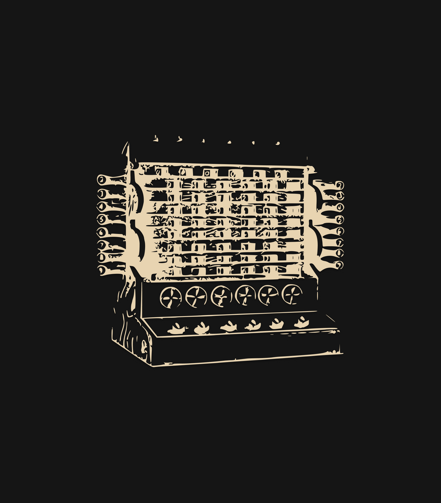
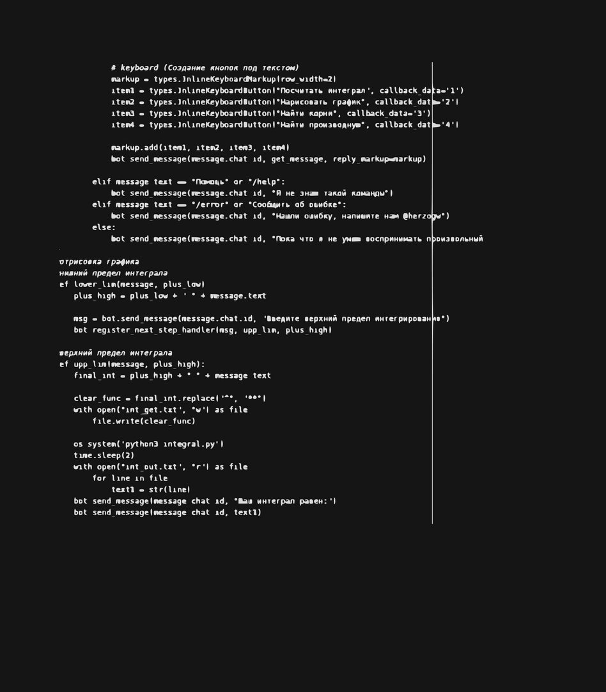

HS Abacus работает над проектом который
подразумевает вывод на новую ступень использования ваши телефоны, компьютеры и других гаджеты.
Инструменты которые разрабатывает HS Abacus будут полезены не только заядлым математикам, но обычным студентам, ученикам школ и просто людям интересующимся наукой.

В 1623 году была придумана первая вычислительная машина которая могла выполнять базовые математические операции. Кто бы мог подумать что через 400 лет машины смогут рисовать графики зависимостей, брать интегралы, находить корни.
Прогресс не стоит на месте, с каждым днем технологии все больше и больше входят в жизнь человека.
Мы же хотим способствовать этому процессу и помогать науке развиваться.
На данный момент в проекте идете разработка следующих "элементов":
· Мобильное приложение HS Abacus - будет позволять пользователю посредством ввода выражений через камеру или вручную, решать те или иные задачи.
· Telegram Bot - Telegram один из крупнейших мессенджеров предоставляющий удобное API для создания ботов на их платформе, вследствие этого HS Abacus будет реализован как бот.
· Веб-сайт - сайт на котором можно будет совершать все те же вычисления что и на других платформах.

Компьютер — это самый удивительный инструмент, с каким я когда-либо сталкивался. Это велосипед для нашего сознания.
created with
Website Builder Software .